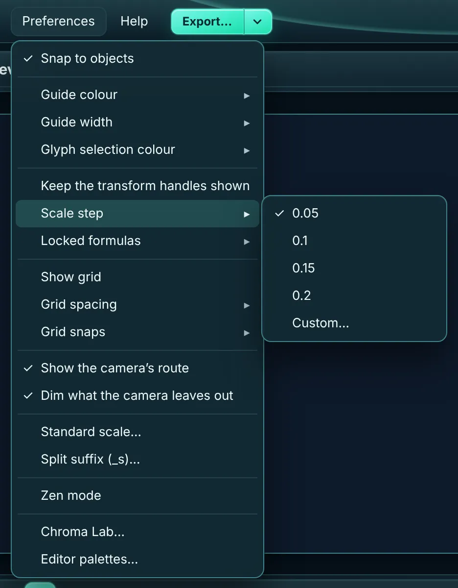
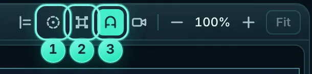
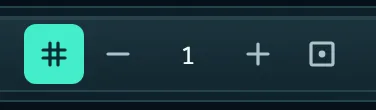
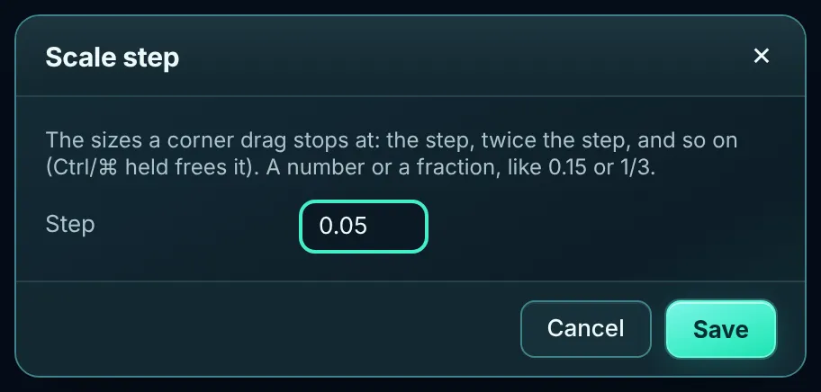
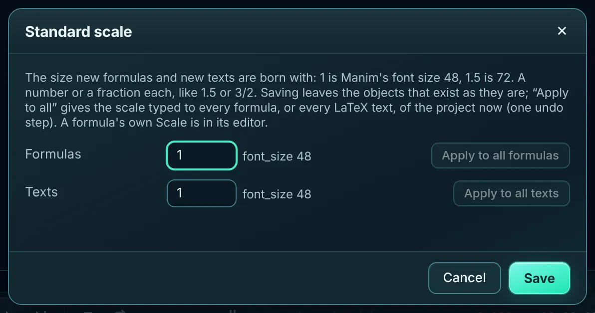
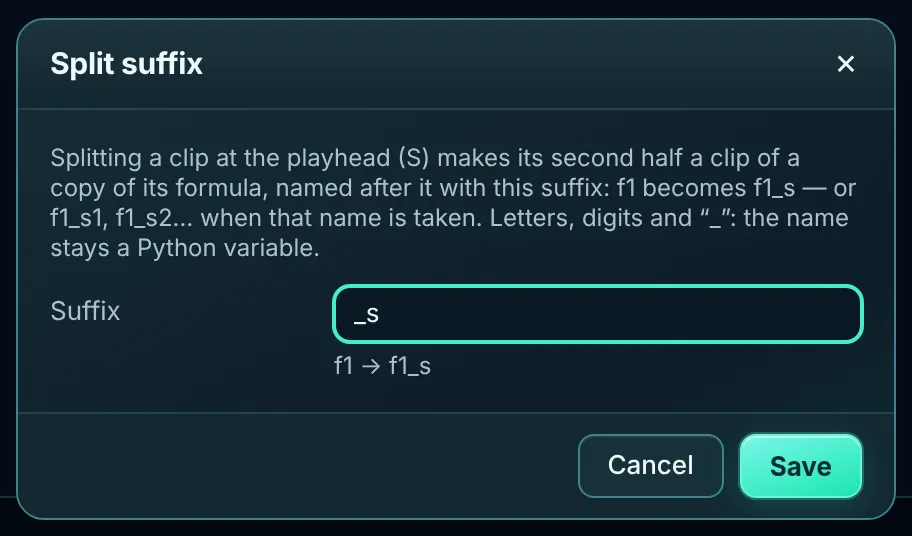
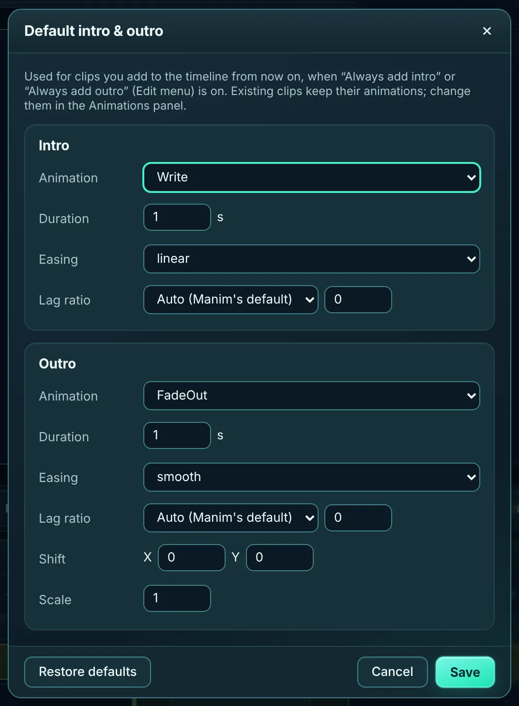
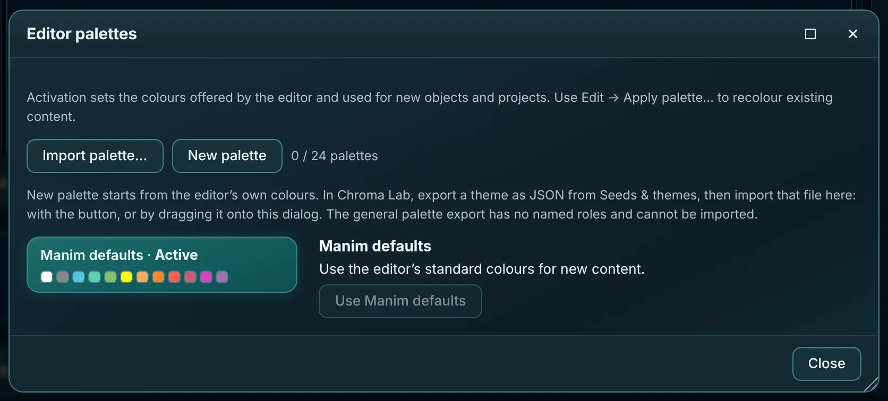
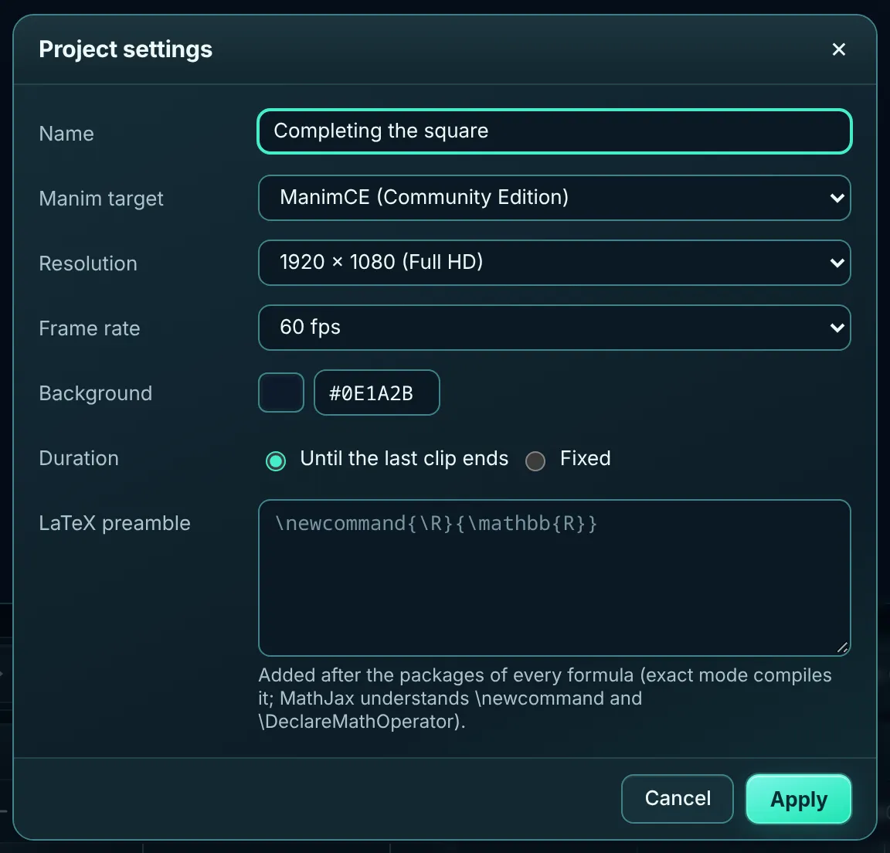

Preferences
Every preference of the editor: what it does, where you change it, and what it is the first time you open the app. Preferences belong to you and your browser; the settings of a project are a different thing, at the end of the page.
Where preferences are kept
A preference is kept in the browser you use, for you, and not in a project file. It is the same for every project you open, and it does not travel with a project: open the same file on another computer and the editor behaves as that computer’s browser remembers. Change one and it takes effect at once; there is nothing to save and nothing to undo.
The Preferences menu
Most preferences are in the Preferences menu, grouped by what they do. The others are in the Edit and View menus, or on a button of the panel they change, and the tables below say where.

The entries are described one by one in Every menu; here they are described by what they change.
Look and layout
How the editor looks and how its panels are arranged.
| Preference | Where you change it | What it does | Default |
|---|---|---|---|
| Theme | View ▸ Theme View ▸ Toggle theme the button at the end of the menu bar | Dark, Light, or System, which follows the colour scheme of your operating system as it changes. The button and Toggle theme flip between dark and light and keep that choice. See The interface. | Dark |
| Panels | View ▸ Panels the chevron in a panel’s header dragging the gaps between panels | Folds the Creator, the Animations panel and the Timeline to their title bars, and sets their sizes. The browser remembers both, so the layout comes back as you left it. In the stacked layout of a narrow window there is nothing to fold. See The interface. | All three shown, at their standard sizes |
| Zen mode | Preferences ▸ Zen mode | An arrangement for small windows: the timeline is a column on the left, drawn vertical, and the Preview takes all the rest. The Creator and the Animations panel are behind two buttons of a strip along the Preview, each opening its panel as a half of a drawer over it. The browser also remembers the side of the Preview the strip is on, which halves are open, the drawer’s height and where its halves meet. See The interface. | Off |
| Creator list | the key beside the search in the Creator, which switches to the other view | Shows the formulas as rows with their rendering, or as a grid of blocks. See Formulas. | List |
| Previews of the Creator list | the +/− key of the Creator’s toolbar (a click larger, a right-click smaller), in the list view | How tall the drawing of each card of the list view is: 1×, 1.5×, 2× or 3× its standard height of 52 pixels. The block view has a size of its own. See Formulas. | 1× |
| Preview tooltip of the blocks | the +/− key of the Creator’s toolbar (a click larger, a right-click smaller), in the block view | How large the tooltip beside a block is, with its drawing: 1×, 1.5×, 2× or 3×, the drawing as many times wider and taller. The list view has a size of its own. See Formulas. | 1× |
| Glyph list | the Glyph list key beside the Glyphs title in the formula editor and the text editor | Lists the glyphs under the drawing as keys, each with its index and label: the way to pick glyphs from the keyboard. It takes room, so it shows only when asked for. See Picking glyphs. | Off |
| Glyph list of the pair editors | the Glyph list key in the relation editor and in the pair editor of a Morph block | The same list under each of the two formulas of a pair editor: one choice for the two editors. See Relation editor. | Off |
| Formula keypad | the ⌨ Keyboard key beside the LaTeX title of the formula editor, which shows and hides it | Whether the on-screen keypad of the formula editor, under the visual field, was left shown: it is there again the next time the editor opens, until its key hides it. See Formulas. | Hidden |
The Preview
Aids for placing things in the Preview. Three of them are also buttons in the toolbar at the end of the Preview’s title bar, so you can switch them without opening a menu.

| Preference | Where you change it | What it does | Default |
|---|---|---|---|
| Snap to objects | Preferences ▸ Snap to objects the magnet button in the Preview’s toolbar | A dragged formula sticks to the edges and centres of the other formulas and of the frame, and to the gaps between them. Hold Ctrl/⌘ after pressing to drag freely. See The Preview. | On |
| Guide colour | Preferences ▸ Guide colour | The colour of the guide lines that a snapped drag shows: yellow, orange, magenta, cyan, green or white. See The Preview. | Yellow |
| Guide width | Preferences ▸ Guide width | How thick those lines are: thin, regular or thick. See The Preview. | Thin |
| Glyph selection colour | Preferences ▸ Glyph selection colour | The colour of the glyphs picked with Alt in the Preview, and of the rectangle that picks them. The same six colours as the guides. See Picking glyphs. | Yellow |
| Keep the transform handles shown | Preferences ▸ Keep the transform handles shown the handles button in the Preview’s toolbar | Keeps the handles for scaling and rotating on the selected clips. Off, they show only while you hold Shift. See The Preview. | Off |
| Scale step | Preferences ▸ Scale step Preferences ▸ Scale step ▸ Custom… | The step that a corner drag’s scale snaps to. Choose a preset, or Custom… for a number or a fraction such as 1/3, from 0.01 to 2. See The Preview. | 0.05 (presets 0.05, 0.1, 0.15, 0.2) |
| Locked formulas | Preferences ▸ Locked formulas | How opaque the Preview draws a formula that is locked in it, of its own opacity: 20, 30, 40, 50, 60, 80 or 100 %. Only the Preview is faded; nothing exported is. See The Preview. | 40 % |
| Show grid | Preferences ▸ Show grid the # button in the bar under the Preview Ctrl+' | Draws a grid under the formulas and makes a dragged formula snap to it (Ctrl/⌘ held frees it). The grid is never part of an export. See The Preview. | Off |
| Grid spacing | Preferences ▸ Grid spacing − and + beside the # button Alt+↑ and Alt+↓ while the grid is shown | The distance between grid lines, in Manim units: 2, 1, 0.5, 0.25 or 0.1. See The Preview. | 1 unit |
| Grid snaps | Preferences ▸ Grid snaps the last button of the grid controls, under the Preview | What the grid holds while you drag: the formula’s centre, or whichever of its edges is nearer to a line. See The Preview. | The formula’s centre |
| Show the camera’s route | Preferences ▸ Show the camera’s route | In the world view of a scene with a camera, draws the line with arrowheads that joins the camera’s frames in the order its moves run. See The camera. | On |
| Dim what the camera leaves out | Preferences ▸ Dim what the camera leaves out | In the world view of a scene with a camera, dims what the camera leaves out at the playhead. See The camera. | On |
| Circle selector | the Circle selector button in the Preview’s toolbar S | A click takes the symbol nearest to the pointer within a circle, instead of what is right under it: the formula, or with Alt the symbol itself. See Picking glyphs. | Off |
| Reach of the circle | Shift + wheel in the Preview while the circle selector or Align by symbol is on, and over the drawing of a pair editor | How far from the pointer, in screen pixels, a symbol is still picked: the radius of the circle selector, of Align by symbol and of the circle that takes glyphs in the pair editors. See Picking glyphs. | 14 px (from 6 to 60) |

Scale step ▸ Custom… opens a small dialog. It takes a number or a fraction, such
as 1/3 or 0.3/0.2, with a dot or a comma for the decimals, and shows its value
when you type a fraction.

New objects and animations
What the objects you create from now on start with. None of these changes what is already in the project.
| Preference | Where you change it | What it does | Default |
|---|---|---|---|
| Standard scale | Preferences ▸ Standard scale… | The size that new formulas and new LaTeX texts are born with: 1 is Manim’s font size 48, 1.5 is 72. Saving leaves the objects that exist as they are; Apply to all formulas and Apply to all texts give the scale typed to every one of the project. See Organizing. | 1 for formulas and 1 for texts (font size 48) |
| Split suffix | Preferences ▸ Split suffix… | The suffix that names the copy a split makes: cutting a clip at the playhead (S) gives its second half a copy of its formula, named after it with this suffix — f1 becomes f1_s, or f1_s1, f1_s2… when that name is taken. Letters, digits and “_”, at most 16, so that the name stays a Python variable. See The timeline. | _s |
| Always add intro | Edit ▸ Always add intro | New clips get the intro chosen in Default intro & outro…, instead of appearing at once. A formula can choose its own with Appears with in its editor. See Intro and outro. | Off |
| Always add outro | Edit ▸ Always add outro | New clips get the outro chosen in Default intro & outro…, instead of disappearing at once. See Intro and outro. | Off |
| Default intro & outro | Edit ▸ Default intro & outro… | The animation, duration, easing, lag ratio and, for the fades, shift and scale of the intro and of the outro that the two switches above give. Restore defaults puts the standard ones back. See Intro and outro. | intro Write, 1 s, linear; outro FadeOut, 1 s, smooth |
| Suggest morph pairs | Edit ▸ Suggest morph pairs | A new Morph block starts with the pairs that Suggest finds for it where it lands, instead of none. A copy of a block is never given pairs. See Morph blocks. | Off |

Split suffix… opens a small dialog with one field. The menu shows the suffix in use
between brackets, and the dialog shows the name it gives under the field, such as f1 → f1_s.
A text that is not a suffix is refused, with the reason under the field.

f1.
Glyphs and export
| Preference | Where you change it | What it does | Default |
|---|---|---|---|
| Glyph source | the three Glyph source items of the View menu | Which renderer draws the formulas: Automatic (the companion’s exact LaTeX glyphs when it runs, MathJax otherwise), MathJax, or LaTeX (companion). This one is not remembered: after a reload it is Automatic again. See The companion. | Automatic |
| Python target of the Export… button | Export ▸ Python — ManimCE… Export ▸ Python — ManimGL… | The Export… button exports Python for the target of the last Python export you opened. The browser remembers it. See Exporting. | ManimCE |
Palettes
Preferences ▸ Chroma Lab… opens the colour studio that comes inside the editor, to make a palette and send it to the editor. Preferences ▸ Editor palettes… is the library of palettes you can use: you import, make, edit, activate and delete palettes of named colour roles there, up to 24. Until you activate one, the editor uses its own standard colours (the entry Manim defaults). Activating a palette changes the colours the editor offers and gives new objects and new projects, and does not recolour the project you have open; that is what Edit ▸ Apply palette… is for. The library is kept in the browser like the preferences above. Palettes and Chroma Lab teaches all of it.

Project settings are not preferences
File ▸ Project settings… holds what belongs to the project itself: its name, the size and speed of its scene, its background, and the library it is exported for. They are saved in the project file, so they travel with it, and Apply makes all your changes one undo step.

| Setting | What it does | New project |
|---|---|---|
| Name | The project’s name, shown in the menu bar. You can also click it there to rename the project in place. An empty name becomes Untitled. | Untitled |
| Manim target | ManimCE (Community Edition) or ManimGL (3b1b): the library the formulas are measured for and the Python is written for. | ManimCE |
| Resolution | The size of the scene in pixels: 1920 × 1080 (Full HD), 1280 × 720 (HD), 3840 × 2160 (4K), or a width of 16 to 7680 and a height of 16 to 4320 of your own. | 1920 × 1080 |
| Frame rate | 24, 25, 30 or 60 frames a second, or a whole number from 1 to 240 of your own. Every play and wait of the exported scene lasts a whole number of frames. | 60 |
| Background | The colour of the scene’s background. | Black, or the background of the active palette |
| Duration | Until the last clip ends, or Fixed at a number of seconds above 0. | Until the last clip ends |
| LaTeX preamble | Lines added after the packages of every formula. The companion’s LaTeX compiles them; MathJax understands \newcommand and \DeclareMathOperator. | Empty |
What else the browser remembers
These are not preferences you set, but you will see them come back:
- The autosave of your work, one per tab, so a reload or a crash brings it back (see Recovering your work).
- The folder of File ▸ Sync folder… (Chrome and Edge keep it), and the stars you give projects in the Projects dialog.
- Your templates, My templates and Favorites, in the template library.
- The palette library of Editor palettes….
The view of the Preview (its zoom and pan) and the zoom and the track heights of the timeline are not remembered: they start afresh each time you open the editor.